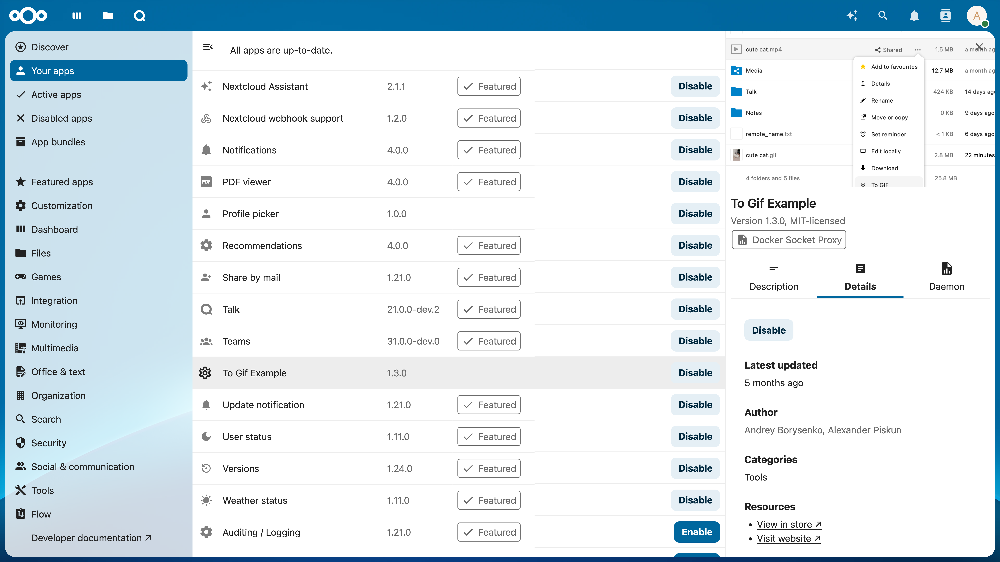

AppAPI and External Apps
Previously, Nextcloud only supported applications written in the PHP programming language. In order to support a wider range of use cases, an ecosystem for ExApps (short for “External Apps”) was introduced, allowing for the installation of apps as Docker containers.
Most of our Artificial Intelligence (AI) apps are developed as ExApps and thus may require some preparation of your Nextcloud instance before you can install them.
Installing AppAPI
All ExApps require the AppAPI Nextcloud app as a dependency. As of Nextcloud version 30.0.1, AppAPI is automatically installed by default. If AppAPI is not installed, you can still install it by simply navigating to the Apps management page in your Nextcloud instance and search for AppAPI from the Tools category.
Setup deploy daemon
A Deploy Daemon is the way for Nextcloud to install, communicate with, and control ExApps.
Note
If you are using Nextcloud AIO with the “HaRP” or “Docker Socket Proxy” container enabled, a Deploy Daemon will be automatically created and configured to work out-of-the-box. Otherwise, follow the steps below to set up a Deploy Daemon from the AppAPI admin settings.
Tip
After registering a Deploy Daemon, use the Test Deploy action to verify it is reachable and working. In the list of Deploy Daemons, click the … (three‑dots) menu beside the daemon you want to verify and choose Test Deploy. For details on what this check does and how to interpret the results, see Test Deploy.
HaRP
Setup a Docker container called HaRP that proxies access to Docker and to the ExApps for your Nextcloud instance. Be mindful of changing the values of
HP_SHARED_KEYandNC_INSTANCE_URL.Go to AppAPI admin settings.
Click on the “Register Daemon” button.
- A filled form should appear. This default configuration
HaRP Proxy (Host)should work for most setups. For Nextcloud AIO, useHaRP All-in-One.If you are using Nextcloud in a custom docker network and would want the HaRP container to be limited to it, use theHaRP Proxy (Docker)option to have the fields pre-filled with the common options or change them manually.Here, you should ensure the HaRP container itself is launched with the same network as your Nextcloud instance optionally with no ports exposed to the host in step 1, and the same docker network is mentioned in theNetworkfield in the deploy config. Ensure the same shared key is used in the HaRP container and in the AppAPI settings.
Click “Check connection” to verify that the configuration is correct.
Click “Register” to save the Deploy Daemon configuration.
Set up a location redirect in your Nextcloud’s main proxy configuration to redirect requests to the HaRP container. Some examples for popular reverse proxies can be found in Configuring Your Reverse Proxy in the HaRP readme.
Test the whole setup with “Test deploy” in the 3-dots menu of the Deploy Daemon.
This is suitable for local setups where the Nextcloud server and the ExApps are on the same machine or in the same docker network. The ExApps in this configuration or the ExApp server need not expose any ExApp related port (23000-23999) necessarily to the host, nor do they need to be reachable from the host. They should be able to reach the HaRP container at the FRP port and the Nextcloud instance. For different/remote setups, see deployment configuration examples here.
Note
The existing ExApps can be migrated to use the new HaRP proxy following this guide.
Docker Socket Proxy
Setup a Docker container called docker-socket-proxy that proxies access to Docker for your Nextcloud instance.
Go to the AppAPI admin settings.
Click on the “Register Daemon” button.
- Fill in the required fields:
Name: unique name of the Deploy daemonDisplay name: the name that will be displayed in the UIDeployment method: by default, you will need to choosedocker_install(manual_installis for development or custom use case of manual ExApp installation)Daemon Host: hostname/IP address + port of the Deploy daemonNextcloud URL: autofilled with current domain, you might need to change the protocol to http/https depending on your setupSet as default daemon: check if you want set new Deploy daemon as defaultEnable https: check if your Deploy daemon (Docker Socket Proxy) is configured with TLS- Deploy Config:
Network: Docker network name, depends on your networking setup, enforces to “host” if “Enable https” is checkedHaProxy password: password for Docker Socket Proxy, if it is configured with TLSCompute Device: CPU, CUDA or ROCm, depending on your hardware config on Deploy daemon host machineAdd additional option(see Additional options): setup additional KEY + VALUE deploy config options
Click “Check connection” to verify that the configuration is correct.
Click “Register” to save the Deploy Daemon configuration.
Note
For remote DSP setup, it should expose the ports on the host.

Deployment configuration examples can be found here.
Installing ExApps
You can now install ExApps from the Nextcloud App Store by clicking “Install” on the respective app in the Apps page. If successful, the ExApp will be displayed under the “Your apps” list.
FAQ
- I have two graphics cards XXX with 6/8/Y GB of ram each. How can I run something which does not fit into one graphics card?
Distributing models across multiple GPUs is currently not supported. You will need a GPU that fits all of the model you are trying to use.
- I have YYY graphics card that does not supports CUDA - can I use it and how?
No, our AI apps require GPUs with CUDA support to function at this time.
- What is the minimum VRAM size requirement for the GPU if I want to install multiple apps?
When running multiple ExApps on the same GPU, the GPU must hold the largest model amongst the apps you install.
- Is it possible to add more graphics cards for my instance to enable parallel requests or to speed up one request?
Parallel processing of AI workloads for the same app with multiple GPUs is currently not supported.
- Can I use the CPU and GPU in parallel for AI processing?
No, you can only process AI workloads on either the CPU or GPU for one app. For different apps, you can decide whether to run them on CPU or GPU.
Docker Socket Proxy vs HaRP
HaRP has an additional benefit of being able to proxy requests coming from the Web interface or an API to the ExApp container without being proxies through the Nextcloud server, saving resources, improving performance and supporting additional protocols like WebSockets.
HaRP is the recommended way to run ExApps, but if you are not able to use it, Docker Socket Proxy is still supported.
Frontend requests in case of Docker Socket Proxy:
graph LR;
subgraph Browser
A[Frontend]
end
B[Proxy]
subgraph Services behind the proxy
C[Dcker Socket Proxy]
D[ExApp]
E[Nextcloud Server / AppAPI]
end
A --> B
B -->|Request to an ExApp| E --Converted to ExApp auth--> D
B -->|All other usual requests| E
Frontend requests in case of HaRP:
graph LR;
subgraph Browser
A[Frontend]
end
B[Proxy]
subgraph Services behind the proxy
C[HaRP]
D[ExApp]
E[Nextcloud Server / AppAPI]
end
B --All other usual requests--> E
A --> B
B --Direct request to an ExApp--> C --Converted to ExApp auth--> D
C --User auth validation--> E